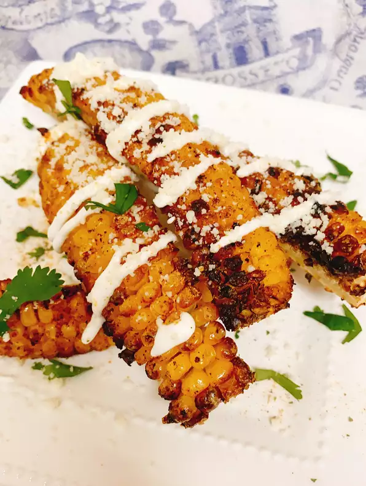

Easy Air Fried Corn Ribs

Description
These air fried corn ribs are reminiscent of
Mexican street corn, but each ear is split into
quarters and then air fried.
I used frozen corn on the cob which I thawed.
Ingredients
- corn on the cob
- traders joe seasoning 3 tablespoon
- nonstick cooking spray
- cotija cheese 1/4th
- creama 2 tablespoons
- minced cilantro 1 tablespoon
Steps
- Preheat an air fryer to 400 degrees F (200 degrees C) for 7 minutes.
- Meanwhile stand corn cobs on the end, and with a sharp knife
(I used a wüsthof nakiri) cut each ear down the middle.
corn cob halves flat on a cutting board and cut in half lengthwise
(you will get a total of 4 'ribs' per ear of corn).
- Spray each corn rib with non-stick spray.
Sprinkle 2 tablespoons of seasoning over the 16 corn ribs.
- Air fry corn ribs in batches for a total of 12 minutes. Remove from air fryer.
- Drizzle crema con sal over corn 'ribs' and sprinkle with cotija cheese and remaining seasoning.
Garnish with chopped cilantro.